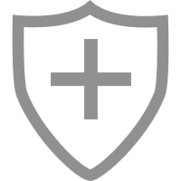

<!doctype html>
<html>

	<head>
		<meta charset="UTF-8">
		<title></title>
		<meta name="viewport" content="width=device-width,initial-scale=1,minimum-scale=1,maximum-scale=1,user-scalable=no" />
		<link href="css/mui.min.css" rel="stylesheet" />
		<style type="text/css">
		html,body{
			background: #fff;
		}
		html,body,h1,h2,h3,h4,h5,h6{
			color: #323232;
		}
         .iconfont{
         	color: #909090;
         }
         .mui-content{
         	background: #fff;
         }         

		nav span{
			color: #646464;
		}
		</style>
	</head>

	<body>
		
		<!--底部导航-->
        <footer>
        	<nav id="nav" class="mui-bar mui-bar-tab">
	           <a id="defaultTab" class="mui-tab-item" href="news.html" >
	           		
	           		<span class="mui-tab-label">资讯</span>
	           </a>
	           <a class="mui-tab-item" href="aliance.html">
	           		
	           		<span class="mui-tab-label">诚信联盟</span>
	           </a>
	           <a class="mui-tab-item" href="product-center.html">
	           		
	           		<span class="mui-tab-label">产品中心</span>
	           </a>
	           <a class="mui-tab-item" href="mine.html">
	           		
	           		<span class="mui-tab-label">我的</span>
	           </a>
            </nav>
        </footer>
	</body>
	<script src="js/mui.min.js"></script>
	  <script type="text/javascript">
			//mui初始化
			mui.init();
			//选项卡点击事件
			mui('.mui-bar-tab').on('tap', 'a', function(e) {			
				// 获取当前点击的选项
				var targetTab = this.getAttribute('href');	
				
				// 获取图标对象
				var targetIcon=mui(this.children[0])[0];
				// 初始化
				mui('.mui-bar-tab .mui-tab-item img').each(function (index,item) {
					var itemSrc = item.getAttribute('src');
					if(itemSrc.indexOf('active')){
						item.src = itemSrc.replace('-active.png','.png');
					}
				});
				// 设置当前的图标
				targetIcon.src = targetIcon.getAttribute('src').replace('.png','-active.png');	
				
				// 当前选项值传到父webview
				if(window.plus){
					var currWs = plus.webview.currentWebview();	
					var targetTitle = this.querySelector('.mui-tab-label').innerHTML;
					// 触发详情页面的targetTab事件
					mui.fire(currWs.parent(),'targetTab',{
						targetTitle:targetTitle,
					    targetTab:targetTab
					});
				}
			});
			
			// 自定义事件，模拟点击"首页选项卡"
			document.addEventListener('gohome', function() {
				var defaultTab = document.getElementById("defaultTab");
				// 模拟首页点击
				mui.trigger(defaultTab, 'tap');
				// 切换选项卡高亮
				var current = document.querySelector(".mui-bar-tab>.mui-tab-item.mui-active");
				if (defaultTab !== current) {
					current.classList.remove('mui-active');
					defaultTab.classList.add('mui-active');
				}
			});
		</script>
</html>